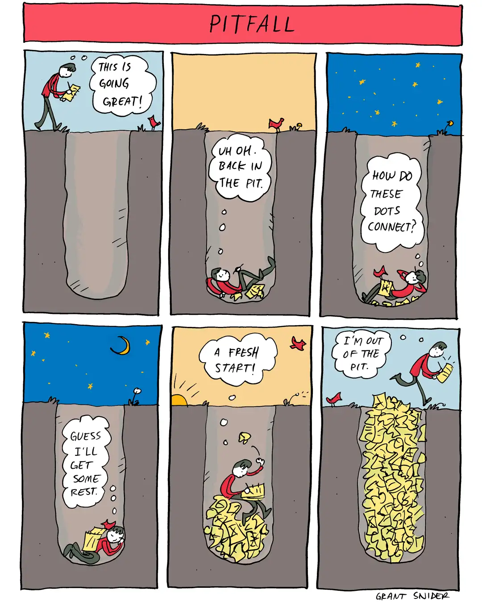

Happy Wednesday! Thank you for supporting the Daily Bulletin project.
- Suggest improvements to the Daily Bulletin project.
- Unsubscribe if you no longer wish to receive emails from the Daily Bulletin project.
Wellbeing Inspirations
Want to contribute to a future Daily Bulletin? Share your inspirations to give everyone some morning wellbeing energy!
Cartoon of the Day

Created by Grant Snider.
Delicious Dinings
| Day | Meal | Options |
|---|---|---|
| Wed | Breakfast | Hot Breakfast |
| Lunch | Beef Bourguignon | |
| Creamy Mushroom Ragout 🌱 | ||
| Dinner | Falafels 🌱 | |
| Cauliflower Bake 🌱 | ||
| Thu | Breakfast | Continental Counter |
| Lunch | Vegetable Paella 🌱 | |
| Tomato & Mozzarella Fusilli 🌱 | ||
| Dinner | Chicken Cajun Pasta Bake | |
| Roast Red Pepper and Tomato Risotto 🌱 |
The catering team would like to remind everyone to wash their hands before coming to the dining hall, and to refrain from eating in the servery area. Thank you!
Retrieved from Shared Weekly Menu. For reference only; accuracy not guaranteed.
Important Events
| Day | Time | Event | Location |
|---|
Retrieved from What's On This Week.
Today in History
- 1342 – An Anglo-Breton army defeated a far larger Franco-Breton force in the first land battle of the Hundred Years' War.
- 1551 – Sue Takafusa, a retainer of the Ōuchi clan in western Japan, led a coup against the daimyō Ōuchi Yoshitaka, leading to the latter's forced suicide.
- 1863 – Georges Bizet's opera Les pêcheurs de perles premiered at the Théâtre Lyrique in Paris.
- 1982 – Cheers, an American television sitcom, debuted with its pilot episode on NBC.
- 2009 – A 7.6 MW earthquake struck off the southern coast of Sumatra, Indonesia, killing 1,115 and impacting an estimated 1.2 million people.
Retrieved from Wikipedia.